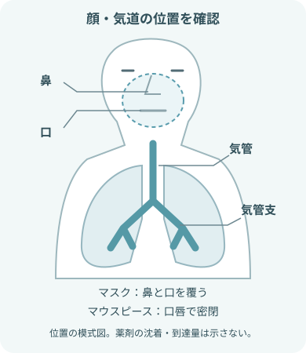

最初に押さえる注意事項
薬剤と機器の両方を確認する
- 処方と照合する項目
- 患者
- 薬剤名
- 濃度・規格
- 1回量
- 希釈液
- 投与時刻・回数
- 投与経路
複数薬剤を自己判断で混ぜない。
薬剤師・電子添文・院内手順で確認する項目- 配合可否
- 調製後の使用時間
- 保存方法
- 構造と対応薬剤が異なる方式
- ジェット式
- 超音波式
- メッシュ式
機種ごとに確認する条件- 使用可能な薬液
- 最少・最大充填量
- 組み立て方
- 圧縮空気と酸素のどちらを駆動源にするかは指示と機器仕様に従い、接続先を取り違えない。
患者から離れない
- 吸入開始後の確認
- 霧の発生
- 呼吸状態
- SpO₂
- 脈拍
- 表情
- 中止して応援を呼ぶ変化
- 呼吸困難・喘鳴の増加
- 強い動悸・振戦
- 意識・酸素化の悪化
- マスクやマウスピースを保持できない患者、嘔吐・誤嚥リスクが高い患者は体位と見守り方法を調整する。
ネブライザーの種類

同じ「吸入」でも異なる項目
- 霧を作る方法
- 薬液量
- 対応薬剤
- 手入れ
| 方式 | 霧を作る仕組み | 実施前の確認 |
|---|---|---|
| ジェット式 | 圧縮ガスで薬液を霧化 |
|
| 超音波式 | 水槽を介した超音波振動で霧化 |
|
| メッシュ式 | 細かな網目を振動させて霧化 |
|
薬剤の確認と調製

準備の中心はダブルチェック
- 薬剤名だけでなく、濃度・規格と容器単位まで読む
- 1回量と希釈後の全量を分けて確認する
- 薬剤の状態・保管の確認
- 開封日時
- 使用期限
- 外観
- 保管条件
- 混合時は配合変化と投与順序を確認する
- 清潔な手技で薬液カップへ入れ、残液へ継ぎ足さない
よく使われる薬剤例
- プロカテロール（メプチン）
- 気管支拡張薬。
- 処方された規格・量を確認する。
プロカテロール使用時の観察例- 動悸
- 頻脈
- 不整脈
- 振戦
- 頭痛
- ブロムヘキシン（ビソルボン）
- 気道粘液溶解薬。
- 指定された希釈と配合可否を確認する。
ブロムヘキシン使用時の観察例- 咳嗽
- 喘鳴
- 呼吸困難
- 痰量の一時的増加
吸入前の観察
- 体位・理解の確認
- 座位やファウラー位が可能か
- 説明を理解してマスク・マウスピースを使えるか
- 吸入前の呼吸の観察
- 呼吸数
- 深さ
- リズム
- 努力呼吸
- 胸郭運動
- 呼吸困難
- チアノーゼ
- 吸入前の肺音の観察
- 左右差
- 喘鳴
- 湿性ラ音
- 呼吸音減弱
- 吸入前の酸素化の確認
- SpO₂
- 酸素投与方法・流量
- 普段の目標値
- 吸入前の咳・痰の観察
- 咳嗽力
- 痰の量
- 痰の色
- 痰の粘稠度
- 自己喀出できるか
- 吸入前の循環・全身の観察
- 脈拍
- 血圧
- 意識
- 表情
- 動悸
- 振戦
- 発熱
- アレルギー歴
ジェット式ネブライザーの手順

圧縮ガスの流れを確認する
- 本体または配管からホース、薬液カップ、マスク・マウスピースへ正しく接続
- カップを傾けすぎず、噴霧が安定しているか確認
- 患者の顔に合うインターフェースを選び、漏れを減らす
- 処方と機器を確認する処方・機器の照合
- 患者
- 薬剤
- 量
- 希釈
- 時刻
- 駆動源
- 機器の型式
- 呼吸状態を評価し、説明する説明前の呼吸状態の確認
- 呼吸
- 肺音
- SpO₂
- 脈拍
目的と所要時間の目安を伝える。
- 薬液を調製して組み立てる
- 薬液を清潔に薬液カップへ入れる。
- 各部品とホースを確実に接続する。
- 体位とインターフェースを整える
- 禁忌がなければ上体を起こす。
- マウスピースは口唇で密閉する。
- マスクは鼻と口を覆う。
- 噴霧を開始する
- 指定された流量・駆動源で霧を確認する。
- ゆっくり自然に呼吸してもらう。
- 終了と回復を確認する
機器の終了目安と指示に従って停止する。
終了後の再評価- 呼吸
- 肺音
- SpO₂
- 脈拍
- 症状
超音波式ネブライザーの手順

水槽と薬液カップを混同しない
- 型式の手順に従って組み立てる部品
- 本体
- 水槽
- 薬液カップ
- 蓋
- ホース
- マスク
- 水槽に使用する液と量は機器説明書に従う
- 薬液は別の薬液カップへ、処方・機器指定量を入れる
- 本体と部品を点検する破損・汚染・水分残りを確認する部品
- 電源
- コード
- 振動部
- カップ
- 蓋
- ホース
- マスク
- 水槽を準備する
- 指定された液を、使用機種の規定線・規定量まで入れる。
- 薬液を準備する
- 薬液カップを取り付ける。
- 処方量と機器の充填条件を満たすように調製する。
- 蓋・ホース・マスクを接続する接続で確認する異常
- 緩み
- 屈曲
- 外れ
- 噴霧量と時間を設定する
- 機器説明書と指示に従って設定する。
- 霧が安定していることを確認する。
- 患者を観察しながら実施する実施中の観察
- 呼吸
- SpO₂
- 脈拍
- 表情
- 咳・痰
終了後に効果と副作用を評価する。
薬液を気道へ届ける吸い方

- マスクが覆う鼻・口と、マウスピースを密閉する口唇を確認する。
- 気道の位置を示す模式図で、薬剤の沈着部位や到達量は示さない。

密着と無理のない呼吸
- 可能なら上体を起こし、胸郭が動きやすい姿勢にする
- マウスピースは歯で軽くくわえ、口唇を閉じる
- マスクは鼻と口を覆い、眼へ霧が流れないよう調整する
- 過換気にならないよう、ゆっくり自然な呼吸を続ける
- 咳が出たら痰を出せるよう休憩し、必要性を再評価する
- 吸入ステロイド薬を使用した場合は、薬剤の指示に従って吸入後にうがい・口腔内洗浄を行う。
- うがいが難しい場合の方法も薬剤ごとに確認する。
吸入中・吸入後の観察

開始前の値と比べる
- 吸入前後で比べる呼吸
- 呼吸数
- 呼吸パターン
- 努力呼吸
- 呼吸困難
- 吸入前後で比べる肺音
- 肺音
- 喘鳴
- 湿性ラ音
- 左右差
- 吸入前後で比べる酸素化
- SpO₂
- 酸素投与条件
- チアノーゼ
- 吸入前後で比べる循環・症状
- 脈拍
- 血圧
- 動悸
- 不整脈
- 振戦
- 吸入前後で比べる咳・痰
- 咳嗽
- 痰の量
- 痰の色
- 痰の粘稠度
- 喀出のしやすさ
- 吸入前後で確認するその他の症状
- 皮疹
- 口腔・咽頭刺激
- 悪心
- 表情
- 訴え
吸入の記録
- 実施時刻
- 薬剤
- 量
- 希釈液
- 機器
- 駆動源・流量
- 実施時間
- 吸入前後の変化
- 副作用
- 痰の変化
- 中止理由
中止して応援を呼ぶサイン

「吸入中だから様子を見る」で続けない
- 中止して応援を呼ぶ呼吸の急な悪化
- 呼吸困難の急な悪化
- 喘鳴の急な悪化
- 努力呼吸の急な悪化
- 中止して応援を呼ぶ酸素化・換気の変化
- SpO₂低下
- チアノーゼ
- 無呼吸
- 中止して応援を呼ぶ循環・症状の変化
- 強い動悸
- 頻脈
- 不整脈
- 胸痛
- 著明な振戦
- 中止して応援を呼ぶ意識・反応の変化
- 意識低下
- 強い不安・興奮
- 会話困難
- 中止して応援を呼ぶ過敏症状の例
- 顔面・口唇の腫れ
- 蕁麻疹
- 急な咳
- 中止して応援を呼ぶ、安全に継続できない状態の例
- 嘔吐
- 誤嚥
- マスクを外せない
- 吸入を止め、機器を外して下記を評価する。
中止時に評価する項目
- 気道
- 呼吸
- 循環
- 酸素投与や救急対応は患者ごとの指示と院内手順に従う。
- 下記の項目をすぐ報告する。
すぐ報告する項目
- 薬剤名
- 量
- 開始時刻
- 症状
終了後の片づけと感染対策

残液を継ぎ足さず、乾燥まで行う
- 手指衛生を行い、残った薬液は院内手順に従って廃棄する
- 患者ごと・使用ごとの交換範囲を確認する
- 再使用部品は機器説明書に従って分解、洗浄、消毒する
- すすぎが必要な呼吸療法器具には、指定された清潔な水を使う
- 水分を残さず十分に乾燥させ、清潔な場所で保管する
- 終了後の部品点検
- ホース内部の結露
- ノズル・メッシュの詰まり
- 部品の亀裂
出典
- PMDA「メプチン吸入液0.01％／メプチン吸入液ユニット」医療用医薬品情報
- PMDA「ビソルボン吸入液0.2％」電子添文
- PMDA「医療機器 添付文書等情報検索」
- PMDA掲載「ネブライザーキット」添付文書
- CDC, Guidelines for Preventing Health-Care–Associated Pneumonia
- CDC, Clinical Safety: Occupationally-acquired Infections and Healthcare Workers
- NHLBI「How the Lungs Work — The Respiratory System」
- 日本小児アレルギー学会「ネブライザー使用時の注意喚起」